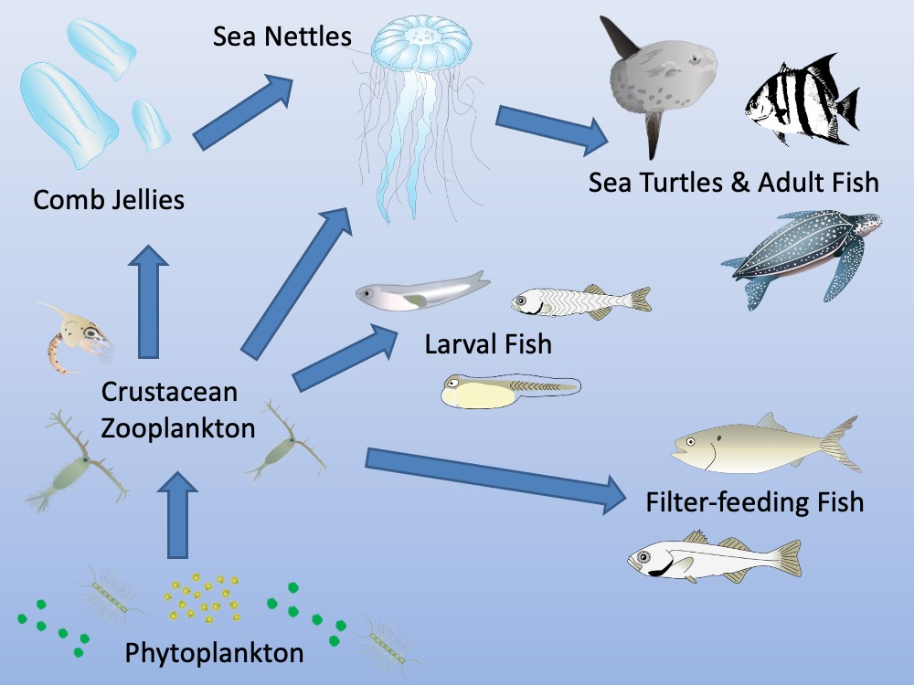
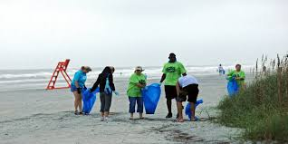

Why Jellyfish Matter
Jellyfish play a crucial role in marine ecosystems. They are both predators and prey, serving as a food source for larger animals like sea turtles, some species of fish (like ocean sunfish), and even other jellyfish. As predators, they help control populations of small fish, crustaceans, and plankton.
Some jellyfish blooms can also indicate changes in the marine environment, such as shifts in water temperature or nutrient levels. Studying jellyfish helps scientists understand the health and dynamics of our oceans.
Threats to Jellyfish and Marine Life

While some jellyfish populations are thriving, often due to human impacts like overfishing of their predators or nutrient runoff, the overall marine ecosystem faces significant threats that indirectly or directly affect jellyfish:
- Climate Change: Ocean warming and acidification can alter jellyfish habitats and life cycles.
- Pollution: Plastic pollution is a major concern, as jellyfish can ingest microplastics, and sea turtles often mistake plastic bags for jellyfish. Chemical pollutants can also harm marine life.
- Overfishing: Removing natural predators of jellyfish can lead to an imbalance, causing some jellyfish populations to explode, which can negatively impact other species and human activities.
- Habitat Destruction: Coastal development and destructive fishing practices can damage important marine habitats.
How You Can Help Protect Marine Ecosystems
Protecting jellyfish means protecting the entire marine environment. Here are some ways you can contribute:
- Reduce Plastic Consumption: Use reusable bags, bottles, and containers. Properly dispose of and recycle plastics.
- Support Sustainable Seafood: Choose seafood that is caught or farmed responsibly to avoid overfishing and harmful fishing practices.
- Be a Responsible Tourist: When visiting coastal areas, respect marine life, avoid disturbing habitats, and don't leave trash behind.
- Conserve Water: Reducing water usage helps prevent runoff that can carry pollutants into the ocean.
- Educate Yourself and Others: Learn more about marine conservation issues and share your knowledge.
- Support Marine Conservation Organizations: Consider donating to or volunteering with organizations dedicated to protecting our oceans.